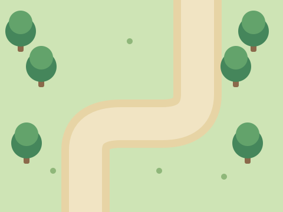
Duas poses.
Muitas ações com código.
Cada Pokémon tem somente uma imagem de frente e uma de costas. Os blocos do Scratch criam o deslocamento, o salto e as ações da história.
ESCOLHA A AÇÃO E OBSERVE OS BLOCOS
Qual ação você quer programar?
x: -120 · y: -40
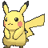
ROTA DE EXPLORAÇÃOEscolha uma ação e clique em Executar.
Baixar Pikachu com 2 fantasias ↓O resultado deve ser…
Como usar apenas frente e costas no Scratch
Envie um ator .sprite3 e abra Fantasias. Você encontrará somente frente e costas. Para escolher a aparência, use mude para a fantasia. Como há duas fantasias, o bloco próxima fantasia alterna entre elas.
Também é possível enviar os dois PNGs manualmente: envie a frente como ator; depois, no mesmo ator, abra Fantasias → Enviar Fantasia e adicione as costas. Renomeie as fantasias para frente e costas, e o ator para Pokemon.
Para andar ou pular, mantenha a pose escolhida e altere x ou y. Cada teste desta oficina começa da posição inicial. No seu jogo, você pode continuar da posição em que o Pokémon estiver.
ROTA → BATALHA → GINÁSIO
Três cenários para sua aventura.
SVG · 480 × 360


Use Escolher um Cenário → Enviar Cenário. Renomeie para rota, batalha e ginasio. Use mude para o cenário [batalha] para avançar na história.
Como conectar atores e cenários?
No Palco, mude para batalha e transmita encontro. Nos atores, use quando eu receber [encontro] para mostrar o Pokémon e preparar a Pokébola.
Ao receber capturado, o Pokémon pode se esconder, o cálculo de XP pode ser chamado e o palco pode mudar para ginasio.
16 POKÉMON · UMA FRENTE + UMA COSTAS
Escolha as duas poses do seu Pokémon.
Cada .sprite3 contém somente 2 fantasias.
Pikachu
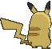


Bulbasaur
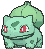
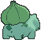


Charmander
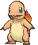
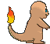


Charizard
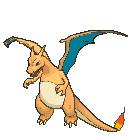
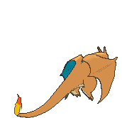


Squirtle
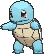
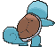


Jigglypuff
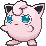


Meowth
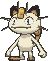
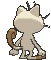


Psyduck
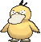
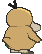


Gengar
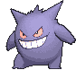
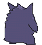


Eevee
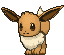
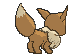


Snorlax
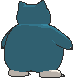


Dragonite
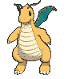
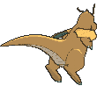


Mewtwo
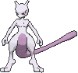
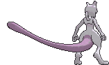


Mew
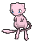
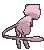


Chikorita
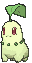
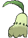


Cyndaquil
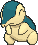
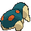


FANTASIAS PARA A ATIVIDADE DE CAPTURA
Baixar Pokébola (.sprite3) ↓A Pokébola da missão.


As seis fantasias da Pokébola representam estados diferentes da captura. Alterne direita e esquerda dentro do procedimento balançar. Depois escolha capturada para concluir.
CONECTE ÀS ATIVIDADES
O código continua sendo o protagonista.
| Conceito | Prática |
|---|---|
| Vetor | Consulte o nome do Pokémon na lista pelo índice. |
| Matriz | Verifique linha e coluna antes de avançar para a próxima casa. |
| Procedimento | Reutilize os blocos pular, atacar e balançar. |
| Função simulada | Calcule o XP depois da captura e guarde o resultado em uma variável. |